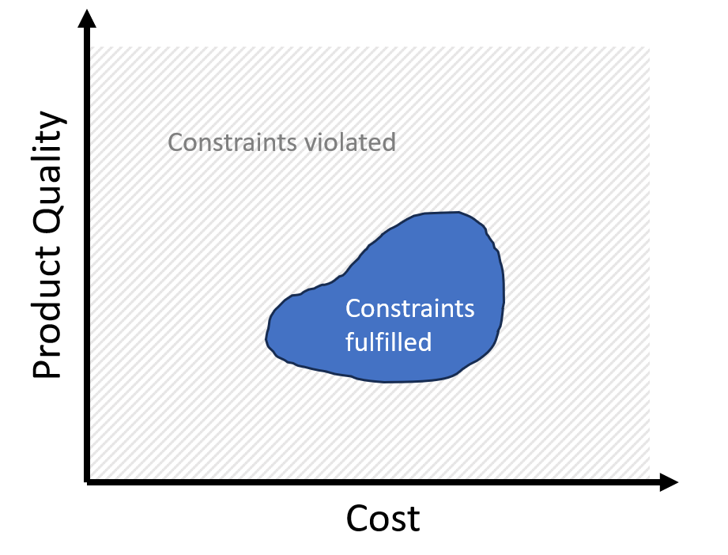
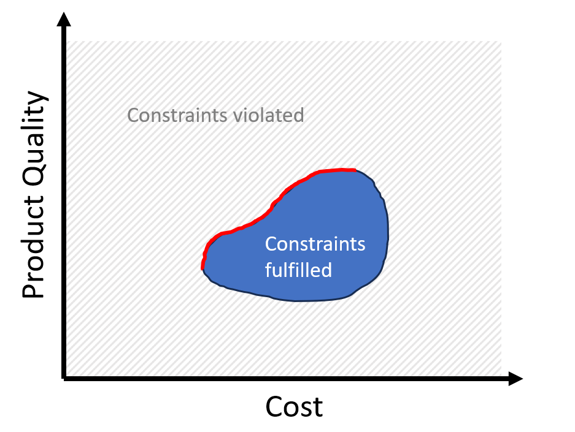

Multicriteria Optimization in Process Industry
The typical "textbook"
optimization problem
looks as follows:
I.e. we minimize some function f over a domain D under the constraints
and
In the case of continuous optimization the domain has the form
.
For mixed-integer optimization problems
and some (or all) of the optimization variables x are integers.
This type of optimization problems are encountered almost everywhere.
Most real-world optimization problems, however, are much more complicated in the sense
that there is not "the one" goal to optimize (in the example above this was "minimize f").
On the contrary, in most
real-world problems there are several
conflicting objectives. For example, in a chemical production process there may be the following objectives:
- maximize product quality,
- minimize production cost,
- minimize CO2 footprint,
- minimize use of toxic substances,
- maximize capacity of the production plant,...
We
want to reach all of these goals at the same time.
The described problem therefore is called a
Multicriteria Optimization (MCO) problem. The most important difference to single objective optimization problems is that the different goals are usually in conflict with each other. For example, usually higher product quality will require higher production cost. But if we have multiple conflicting objectives, what is the "best" solution then?
In fact, for MCO problems, there usually is no best solution. Let uns convince ourselves of this
by means of an example. Suppose we have a plant producing a product. We want to
- maximize its purity and
- minimize its production cost
- under safety constraints (e.g. T < 1300 K, p < 100 bar in reactor).
The parameters x we can change to achieve these goals are operation parameters of the plant. For example these can be the ratio of the educts, heating power of the reactor, pressures, temperatures, ....
Suppose we go through all possible values of x and record the purity, the cost and also look at the safety constraints.
Then we will obtain a plot like this:

What are the "best" points fulfilling the constraints? As said, there can be no unique best point. Suppose we take the most left blue point. It has the lowest cost, but there are allowed (constraints fulfilled) points which have higher quality. And quality may be more important than cost. So, how should we decide on a "best solution"? We can find a reasonable answer to this problem by considering a point in the center of the blue area. Can it be "the best" or "a good" point? Obviously not, because there are points which simultaneously have
both lower cost and higher product quality.
This brings us to the definition of a so-called
Pareto-optimal point. A point is Pareto-optimal, if going away from the point we cannot become better in all goals, i.e. we become worse in at least one goal.
These Pareto-points are the "best compromises" we can make. All other points can be improved in at least one objective without getting worse in the others. In our two-dimensional example, the Pareto-optimal points are shown in red here:

The goal of Multicriteria Optimization (MCO) is the determination of the set of Pareto points for a given problem. In my research, I work on methods and software for efficient determination of the set of Pareto points in optimization problems from chemical process industry.